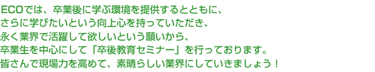

| 卒後教育セミナー | |
| 目からウロコの爬虫類＆両生類セミナー2016・夏の入門編 | |
| 日時 | 2016年8月23日(火) ・セミナー 15:00～18:00(途中休憩あり) |
|---|---|
| 内容 |
毎回好評をいただいておりました爬虫類セミナーですが、今回は両生類まで対象を広げて「爬虫類＆両生類セミナー」として開催し、爬虫類と両生類という「生き物」を、楽しくわかりやすく学んでいただける内容です。 今回も、本校非常勤講師でもあり小動物の飼育管理に詳しく、イべントでの講演など幅広く活躍されている川中豪氏を講師に迎え、座学や実習などで過ごしていただきます。 もちろん、本セミナーにおいて大切にしている「参加のしやすさ」と「お役立ち度」は今回も変わりません。 過去に一度入門編を受講された方はもちろん、今回初めて受けてみたいという方も安心してお越しください。 また、毎回ご好評を頂いています本校非常勤講師でもあり行政書士の井田竜馬氏による 関連法規についての解説コーナーも予定しています。爬虫類を扱っている方もそうでない方も、興味ある方もそうでない方も注目のセミナーです。皆さまのご参加をお待ちしております！ |
| 講師 | 川中 豪 (ティーズガーデン代表・本校非常勤講師) 井田 竜馬(井田竜馬行政書士事務所・本校非常勤講師) |
| 参加費 | OCA/大阪ECO：卒業生1,000円 卒業生以外：2,000円 ＊当日受付でお支払いいただきます ＊領収書発行可 |
| 受講対象者 | 本校卒業生・動物病院勤務経験者・ペットショップ勤務経験者など |
| 会場 | 大阪ＥＣＯ動物海洋専門学校（旧校名：大阪コミュニケーションアート専門学校）校舎 ペットショップ実習室(202教室) ※駐車場、駐輪場はありません |
| 申込締切 | 8月19日(金) |
| 問合せ | 大阪ECO動物海洋専門学校 TEL：06-6578-3520 教務部(粟津) もしくは TEL：06-6536-0024 キャリアセンター(松村) E-mail:sotsugo@osaka-eco.ac.jp |
| 卒後教育セミナー | |
|
アドバンストセミナー アニマルエイドE&R主催・大阪ＥＣＯ動物海洋専門学校共催 ＰＥＴＳ ＡＭＥＲＩＣＡ認定セミナー 『Ｐｅｔ Ｆｉｒｓｔ Ａｉｄ セミナー』 |
|
| 日時 | 2016年 7月26日(火)、8月17日(水)、8月18日(木) ※1回完結 9:30～17:00(開場 9:00) |
|---|---|
| コース内容 | 更新講習はコース内容をベースとしつつもそれぞれ異なりますので、 お申込の際はご確認ください。 |
| 主催 | アニマルエイドE&R |
| 共催 | 大阪ＥＣＯ動物海洋専門学校 |
| 会場 | 大阪ＥＣＯ動物海洋専門学校（旧校名：大阪コミュニケーションアート専門学校）校舎 大阪市西区新町1-32-1 ※駐車場はありません |
| 申込 | 以下のメール、サイトから開催の10日前までにお申し込み下さい。 その際はお名前、ご住所、お電話番号、参加人数をお書き下さい。 |
| 問合せ | アニマルエイドE&R 担当：井田 井田竜馬行政書士事務所内/京都府京田辺市三山木田中44-14 TEL : 0774-26-0597 サイト：http://rui-noir.wix.com/pets-america/ E-mail:ryoma-i@iris.eonet.ne.jp |